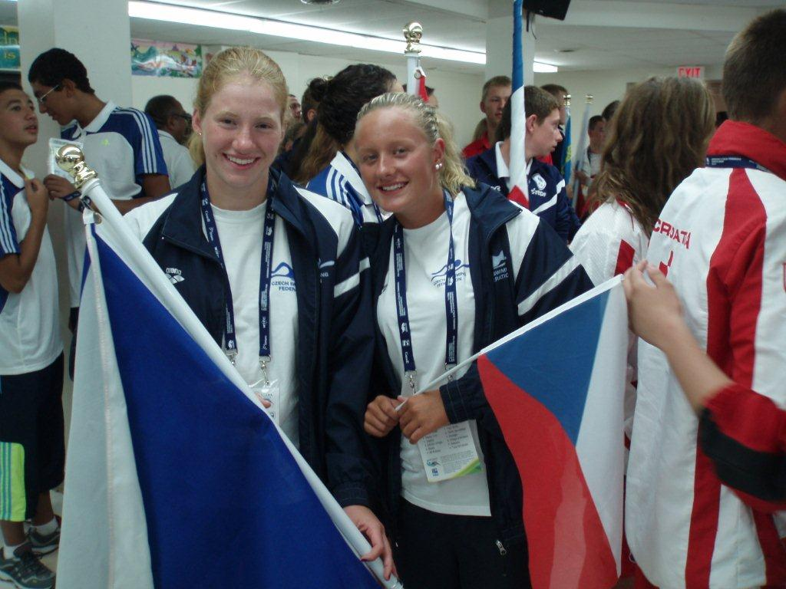

Odchovanka KIN specializovaná na dálkové plavání. V roce 2012 se ve věku 17 let probojovala na historicky první Mistrovství světa juniorů v dálkovém plavání – stala se tak jednou z prvních závodnic vůbec, které na tomto šampionátu startovaly. Ve stejném roce absolvovala i MEJ v Marmarském moři a Evropský pohár – tři mezinárodní starty v jediné sezóně.
| Disciplína | Čas | |
|---|---|---|
| 50 m volný způsob | 0:30.20 |
485
|
| 100 m volný způsob | 1:03.96 |
539
|
| 200 m volný způsob | 2:11.64 |
632
|
| 400 m volný způsob | 4:31.41 |
684
|
| 800 m volný způsob | 9:17.21 |
697
|
| 1500 m volný způsob | 17:34.48 |
714
|
| 200 m polohový závod | 2:28.78 |
609
|
| 400 m polohový závod | 5:09.31 |
661
|
| 50 m motýlek | 0:32.55 |
456
|
| 100 m motýlek | 1:10.54 |
501
|
| 200 m motýlek | 2:31.69 |
517
|
| 50 m znak | 0:37.13 |
387
|
| 100 m znak | 1:16.15 |
444
|
| 200 m znak | 2:35.64 |
515
|
| 50 m prsa | 0:37.98 |
483
|
| 100 m prsa | 1:21.58 |
493
|
| Disciplína | Čas | |
|---|---|---|
| 50 m volný způsob | 0:29.00 |
515
|
| 100 m volný způsob | 1:01.79 |
562
|
| 200 m volný způsob | 2:08.44 |
648
|
| 400 m volný způsob | 4:22.63 |
715
|
| 800 m volný způsob | 9:02.75 |
711
|
| 1500 m volný způsob | 17:14.98 |
722
|
| 100 m polohový závod | 1:09.70 |
568
|
| 200 m polohový závod | 2:23.90 |
649
|
| 400 m polohový závod | 5:02.29 |
643
|
| 50 m motýlek | 0:31.99 |
442
|
| 100 m motýlek | 1:08.70 |
514
|
| 200 m motýlek | 2:30.40 |
517
|
| 50 m znak | 0:34.00 |
431
|
| 100 m znak | 1:11.10 |
468
|
| 200 m znak | 2:27.63 |
539
|
| 50 m prsa | 0:36.63 |
486
|
| 100 m prsa | 1:16.50 |
550
|
| 200 m prsa | 2:42.70 |
565
|